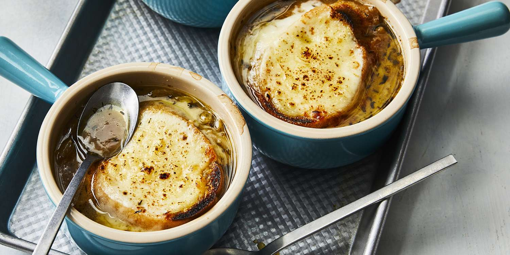

French Onion Soup

Description
Simple soup of onions. Warm, cozy, and flavorful, the ultimate comfort
food.
Ingredients
- 6 large red or yellow onions
- 4 tablespoons extra virgin olive oil
- 2 tablespoons butter
- 1 teaspoon sugar
- Kosher salt
- 2 cloves garlic, minced
- 8 cups beef stock, chicken stock or a combination of the two
- 1/2 cup dry vermouth or dry white wine
- 2 bay leaves
- 1 tablespoon fresh thyme leaves
- 1/2 teaspoon freshly ground black pepper
- 2 tablespoons brandy
- 8 slices French baguette
- 1 1/2 cups grated Gruyere cheese
- Sprinkling grated Parmesan cheese
Steps
-
Peel and thinly slice the onions from root to stem. There should be
about 10 cups of sliced onions in total.
-
In a 5 to 6 quart thick-bottomed pot, heat 3 tablespoons of olive oil on
medium heat. Add the onions and toss to coat with the olive oil. Cook
the onions, stirring often, until they have softened, about 15 to 20
minutes.
-
Increase the heat to medium high. Add the remaining tablespoon of olive
oil and the butter and cook, stirring often, until the onions start to
brown, about 20 to 40 minutes. The amount of time will vary depending on
your pot, stove, and onions.
-
Sprinkle with sugar and 1 teaspoon of salt. Continue to cook until the
onions are well browned, about 10 to 15 more minutes. Add the minced
garlic and cook for a minute more.
-
Add the wine or vermouth to the pot and scrape up the browned bits on
the bottom and sides of the pot, deglazing the pot as you go.
-
Add the stock, bay leaves, and thyme. Bring to a simmer, cover the pot
and lower the heat to maintain a low simmer. Cook for about 30 minutes.
-
Season to taste with more salt and add freshly ground black pepper.
Discard the bay leaves. Add brandy.
-
While the soup is simmering, line a sheet pan with parchment paper or
foil and preheat the oven to 450°F with a rack in the upper third of the
oven. Brush both sides of the French bread or baguette slices lightly
with olive oil. Put in the oven and toast until lightly browned, about 5
to 7 minutes. Remove from oven. Turn the toasts over and sprinkle with
the grated Gruyere cheese and Parmesan. Return to oven when it's close
to serving time and bake until the cheese is bubbly and lightly browned.
-
Ladle soup into a bowl and transfer one cheesy toast onto the top of
each bowl of soup.
Back to Main Menu